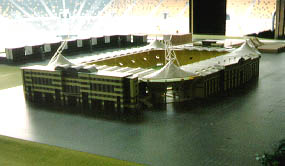

|
Maquettefoto's oost en west |

De foto's zijn van de officiële maquette in de skybox van
Wijckerveste. Dit is de toekomstige oost-zijde.
Op de foto van west (waar ook het home komt) zie je links
nog de ingang van de toekomstige megabioskoop).
Foto's: Koempel Gebronx.
©KPD